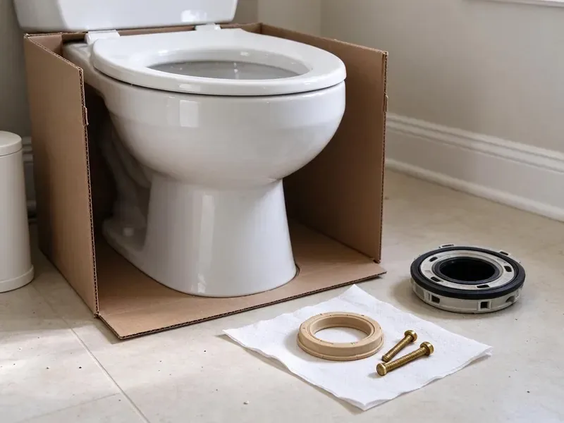
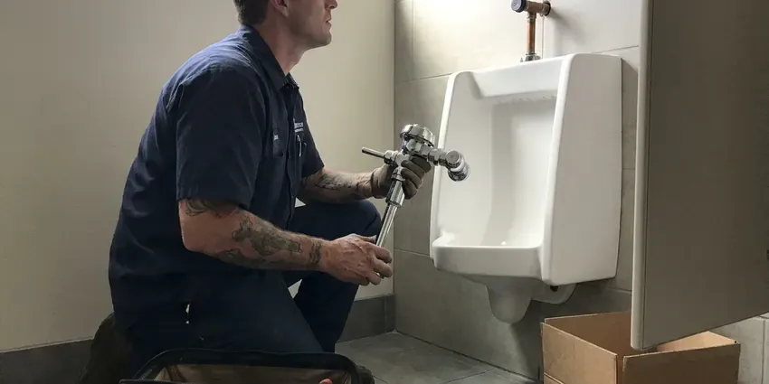

Faucet Installation in Essex Junction, VT
Most faucet installs in Essex Junction, VT take about an hour. CKV Plumbing brings the supply lines and the basin wrench.
- Customer Faucets Welcome
- Old Faucet Hauled Away
- Flat Price Up Front
- Touchless and Pot Fillers
Faucet Installation in Essex Junction, VT, Done Clean
Our plumbers carry supply lines and stops for most kitchen and bath installs.
Your Neighborhood Faucet Installer in Essex Junction, VT
CKV Plumbing installs faucets at wet bars and laundry tubs around Essex Junction, not just in kitchens. On utility faucets we add a vacuum breaker, which keeps a hose left in a mop bucket from back-siphoning into your drinking water. Many bar setups tie into an undersink filter. We plumb that line too.
Work we handle every week:
- Hose Bib and Utility Faucet Installs
- Bathroom Lav Faucet Installation
- Kitchen Faucet Hookups

Additional Bathroom Plumbing Services in Essex Junction, VT
From toilets to showers, our bathroom plumbing team in Essex Junction, VT handles repairs, installs, and upgrades with tidy, code-compliant work.


Customers
Why Choose CKV Plumbing for Faucet Installation in Essex Junction, VT?
Picking the faucet is half the job. Before we recommend a model, we look at the hole layout and how hard your water is, since a cartridge in mineral-heavy water wears faster. Tall pull-downs do not fit under low wall cabinets.
- Fit Check, We check the hole count and measure deck thickness before mounting.
- Code Compliant, Hookups follow Vermont plumbing code, including vacuum breakers on hose-thread faucets.
- Leak Test, Every joint gets checked with a dry towel before we pack up.
Citywide Coverage
Outlying neighborhoods are not an extra charge. We price the install the same anywhere in town. No trip fee for the far side of town, and no surcharge for the second floor bath or a cramped corner vanity.
Experienced Team
Tricky installs are routine for this crew. We have mounted faucets on thick stone with extended shanks, and wired touchless units where the nearest outlet was across the room. Extended shank kits ride on the truck.
Safety-First Approach
Every connection gets a dry-towel test. We wrap a dry paper towel around each joint with the water on and look for the smallest damp spot after a few minutes. All work follows Vermont plumbing code at the supply and at the drain.
Trusted Certified Essex Junction Plumbing Services Professionals
At CKV Plumbing, we are proud to offer certified plumbing services throughout Essex Junction, VT. Credentials matter in this trade. Every repair, install and maintenance visit follows strict safety and quality rules, and the plumbers doing the work carry recognized industry credentials.
Call Us Now PHCC Plumbing Contractor Recognition
PHCC Plumbing Contractor Recognition Better Business Bureau (BBB) Accreditation
Better Business Bureau (BBB) Accreditation Angi Certified Pro
Angi Certified Pro ISO 9001 Quality Management Certification
ISO 9001 Quality Management CertificationSink and Vanity Faucet Installation in Essex Junction, VT
Replacing a Leaky Faucet in Essex Junction, VT
A faucet dripping once a second wastes a few thousand gallons a year. When the body itself is corroded or the brand stopped making parts, replacing it beats paying for a third cartridge swap. Out comes the old faucet. New supplies and a full leak check follow, and the whole visit usually takes about an hour.

Bar and Prep Sink Faucets in Essex Junction, VT
Island prep sinks and wet bars get their own faucet. Bar faucets can tie into a filter cartridge under the cabinet, mounted where you can reach it. Outdoor kitchens use fixtures rated for sun and weather. Seasonal camps and vacation homes are usually drained and winterized each fall to keep pipes from bursting while the place sits empty. We insulate or drain the outdoor lines to match.
Commercial Faucet Installation in Essex Junction
Commercial restrooms need faucets that hold up to hundreds of uses a day. For hand sinks we put in sensor or wrist-blade faucets, and in kitchens we hang pre-rinse units, set at heights that meet accessibility rules. Work can happen after closing. We send the fixture specs to your property manager for the inspector.
Emergency Faucet Installation in Essex Junction, VT
A blown supply line can put gallons on the floor in minutes. Close the stop under the sink first, and if that valve will not turn, shut the main where the water line enters the house. CKV Plumbing sends plumbers out for urgent faucet failures in Essex Junction, VT. We keep a few standard faucets on each truck.
Bathroom Faucet Installation in Essex Junction, VT
Lavatory faucets in Essex Junction homes mostly come as 4-inch centerset or 8-inch widespread, with single-hole models on newer vanities and vessel tops. A large share of Vermont homes rely on private wells, and well water here can range from soft to fairly hard depending on the bedrock. Scale forms fast under a base gasket that is not seated flat. We measure center to center before you buy. We install a matching pop-up drain too, which replaces the old drain gasket while we are under there.
High-End Faucet Installation in Essex Junction, VT
High-end faucets ship with more parts in the box. Premium lines from Brizo and Grohe often use a separate valve body plus finish-matched trim that has to be assembled in a set order under the deck. Padded jaws go on any visible finish. Matte black scratches if a bare wrench slips.
Adding an Outdoor Faucet in Essex Junction
Adding a new hose bib means tapping a supply line and running pipe through the wall. Seasonal camps and vacation homes are often drained and winterized each fall to keep pipes from bursting while the place sits empty. The bib type and the pipe route follow from that, and anywhere freezing is possible we go with a frost-free sillcock. We seal the hole where the pipe passes through the siding. It comes with a built-in vacuum breaker.

Touchless Faucet Installation in Essex Junction
Touchless faucets run on a solenoid valve. We mount the control box high on the cabinet wall, away from where water collects, and power it with batteries or a plug-in adapter. Scale is hard on solenoids, and we install the inline filter when the maker calls for one. We test the sensor range last.
Local Faucet Installation Near Me, Essex Junction, VT
Booking is simple. Call (802) 209-5139 with the faucet brand and model. While you are on the phone we check the spec sheet for hole spacing and deck thickness, so there are no surprises at the sink. You get a two-hour arrival window.
On arrival we lay a drop cloth in the cabinet and set out a bucket under the old supply lines. You get a flat price before we start. The old faucet leaves with us, and the workmanship guarantee covers the hookup.
CKV Plumbing at a Glance
- Fully licensed plumbing team covering Essex Junction, VT
- 24/7 emergency service with same-day scheduling
- Clear written estimates, no hidden fees
- 4.8-star rated by 553+ Vermont customers
Essex Junction Map
Essex Junction Information
- Population
- 10,817
- Area codes
- Local
- Service area
- Essex Junction and towns within a 40 mile drive
- Nearby
- Winooski, South Burlington, Burlington, Shelburne
A large share of Vermont homes rely on private wells, and well water here can range from soft to moderately hard depending on the bedrock. Mineral-heavy water chews up cartridges and aerators faster, so we flush the lines before the new faucet goes on in Essex Junction, VT.
Talk to a Plumber
Reach out to CKV Plumbing for honest, reliable plumbing from people who know the trade in Essex Junction, VT.
Our Specialized Plumbing Services in Essex Junction, VT
At CKV Plumbing, we handle the full list of plumbing services across Essex Junction, VT. From leak detection to full system installs, our team works fast and charges fair prices on homes and commercial properties alike. Here are the core services we offer:


How a Faucet Installation Goes in Essex Junction, VT
From the box to running water, here is how we do it.
Get a Flat Price
Call (802) 209-5139 with the faucet type and sink layout. We quote the labor flat.
Check the Stops
We test the shutoff valves first and replace any that weep before the new faucet goes on.
Flush and Test
Lines get flushed into a bucket so grit stays out of the cartridge. Then we run hot and cold and check for drips.
Frequently Asked Questions About Faucet Installation in Essex Junction
A standard kitchen or lav faucet install runs $150 to $350 in labor. Touchless models and pot fillers cost more, from $300 to $800 or higher, because they need power or new piping inside the wall. You get one flat number.
Our labor is covered by a written workmanship guarantee. The exact term is printed on your invoice. If a connection we made leaks, we come back and fix it at no charge, and the faucet maker's warranty covers the fixture itself.
Yes, every time. Braided stainless supplies are cheap, and old plastic or chrome tubes get brittle enough to split with a nudge. We include them in our price.
Yes, in writing. We guarantee the labor and connections we make, and the term is listed on the service paperwork you get at the end of the visit. The fixture has its own manufacturer warranty, which is lifetime on many brands.
Only if the old faucet was the problem. A clogged aerator or a scaled cartridge will choke flow at one fixture, and a new faucet fixes that right away. Low pressure everywhere is a different problem. We would look at the pressure regulator or the supply piping instead.
Watch the handle. Stiff handles and drips that only stop with a hard push point to worn cartridges or seats. A wobbly spout or a drip that returns after every repair tells you the body is done.
It depends on what is under your sink. If your stops are new and the old faucet comes off easily, go for it, though rusted hardware is where these jobs go sideways. We back the labor with a warranty.
Forty-five minutes to an hour and a half for a standard swap. Pot fillers and wall-mount faucets run longer since the rough plumbing happens before tile, and the trim goes on later. Plan around the tile setter.
What Our Customers Say About Our Plumbing Experts

James P.
Our restaurant had a slow leak at the hand sink that was rotting the cabinet base. CKV Plumbing came in at six in the morning before prep, replaced the trap and both supply lines, and was packed up before my first cook clocked in.
Commercial Plumbing · South Burlington, VT
Tyler J.
We bought a taller comfort height toilet for my dad, who just had knee surgery. The plumber pulled the old one, found the flange was cracked, and replaced it before setting the new bowl. Took about two hours.
Toilet Installation · Winooski, VTMarcus H.
Grease from the fryer line kept clogging the kitchen drain at my diner. CKV Plumbing hydro jetted the line after closing, showed me the buildup on camera, and set us up on a quarterly cleaning so it does not catch us on a Friday again.
Drain Cleaning · Burlington, VT
Brian W.
I smelled gas behind the dryer and called right away. The plumber found a corroded flex connector, replaced it, and pressure tested the whole line before turning the gas back on. He let me watch the gauge hold steady for fifteen minutes.
Gas Line Repair · Montpelier, VTDaniel K.
A pipe burst in the garage ceiling at 11 at night. Someone answered on the second ring, and the plumber was in my driveway about fifty minutes later. He shut off the main, cut out the split section, and had water back on before 2 am.
Emergency Plumbing · Montpelier, VT
Diane F.
My kitchen faucet had dripped for months and I finally got tired of hearing it at night. CKV Plumbing came out the next morning, replaced the cartridge and the O rings, and tightened a loose base that was letting water under the sink.
Faucet Repair · Montpelier, VT